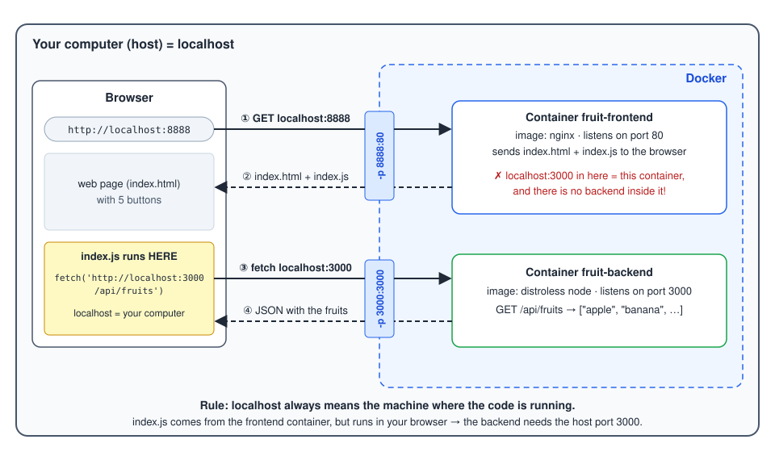

8 Hosting Dynamic Website with nginx
8.1 Fruit Rest Client
Again we use the already known small rest client for consuming the Fruit Rest-Api from a web page.
Following adaptations in the source code have been done:
publicfolder added- Moved
index.htmlinto this folder - Changed
tsconfig.jsonto generate theindex.jstranspilation output into this folder
- Moved
package.jsonfile added- for installing typescript compiler in the docker node image
nginx.conffile added- It overrides the default nginx configuration: every URL which does not match an existing file is answered with
index.html(try_files). This is needed for single-page applications with client-side routing.
- It overrides the default nginx configuration: every URL which does not match an existing file is answered with
8.2 Dockerfile
The setup is again separated into two stages:
- We need to use
nodeas base image for generating the transpilation outputindex.js. - For the run stage, we don’t use node, but
nginxas web server, which hosts both the html and javascript files => therefore we put all our application files into the commonpublicfolder. This folder will then be hosted by nginx.
8.2.1 Step 1: Build Stage
The build stage is basically the same as for the typescript backend application:
FROM node:24 AS builder
WORKDIR /app
COPY ./package*.json ./
RUN npm install
COPY . .
RUN npm run build8.2.2 Step 2: Run Stage
Since we have created all what nginx needs for hosting the web page into the folder /app/public in the build stage, the only thing we need to do is to copy this folder into the web root folder of nginx: /usr/share/nginx/html.
FROM nginx
COPY ./nginx.conf /etc/nginx/conf.d/default.conf
COPY --from=builder /app/public /usr/share/nginx/htmlNote:
- No
EXPOSE 80orCMDrequired, these statements are already declared in the nginx base image. - Overriding the
default.confis only required if your web application uses client-side routing (a single-page application with several URL routes). A plain static site works with the default configuration.
8.3 Build, run, test
cd src
docker build -t fruit-frontend .
docker run -p 8888:80 -d fruit-frontendTest the URL http://localhost:8888 in your browser.
- You should see five buttons. With the backend from the previous exercise running on port 3000,
GET /api/fruitsshowsapple,banana,peach. - Now stop the backend container and click the buttons again. Most buttons show nothing new on the page (the two
.../0buttons showfruit not found). Open the browser developer tools (F12→ tab Console) to see the real error messages. - The JavaScript code runs in your browser, not in the container. Hence it calls the backend via
http://localhost:3000, and the backend container must publish port 3000 on your host.
8.3.1 Browser localhost vs. container localhost

- The browser asks your computer for
localhost:8888. Docker forwards this request to port 80 of the frontend container (nginx). - nginx sends back
index.htmlandindex.js. From now on, nobody in the frontend container runs this code - it runs in your browser. - When you click a button,
index.jscallshttp://localhost:3000/api/fruits. For the browser,localhostis your computer, so the request goes to host port 3000, which Docker forwards to the backend container. - The backend answers with JSON.
Remember: localhost always means the machine (or container) where the code is running. Inside a container, localhost is the container itself. The frontend container has no backend on port 3000, so it would not help to call the backend from there.
Question: What happens if you start the backend with -p 3001:3000? What would you have to change?
8.4 Check yourself
You have finished exercises 5 and 6 (think about the question above first). Take the self-check quiz on the TypeScript backend and frontend images: 5 short questions, answered in your own words (German or English). The AI gives you feedback on each answer, and you can ask follow-up questions. You can repeat the quiz as often as you like.